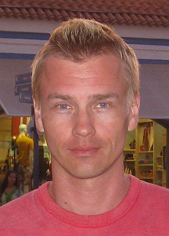
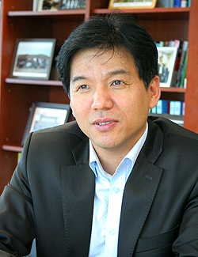
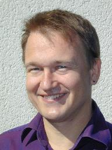
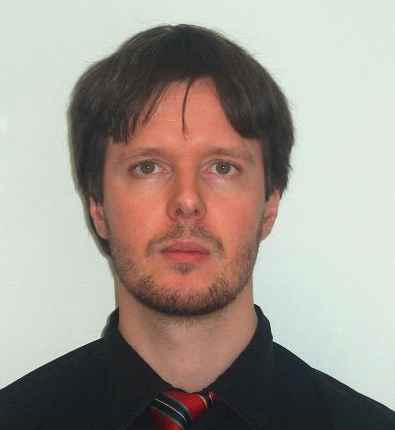

About JCP
Get Involved
Community Resources
Community News
FAQ
Contact Us
About JCP
Get Involved
Community Resources
Community News
FAQ
Contact Us

|
|
Java Community Process: ME EC Elections nominees for 2011

|
The open nomination period for the 2011 Java Community Process (JCP) Program Executive
Committee (EC)
elections runs from 30 September 2011 through 13 October 2011. This page is being updated with information about the candidates for the ME EC as they are nominated. Once the nomination period has closed, the elections will commence on 18 October 2011 and run through 31 October 2011. The EC Elections process was launched in
June 2000.
The following seats are up for the 2011 JCP EC Elections:
Intel and Werner Keil on the SE/EE EC, and Sean Sheedy and Alex Terrazas on the ME EC.
For more information about the current Executive Committee, please refer to the Executive Committee Information page.
What follows are the qualification statements of the candidates for the seats on the ME Executive Committee, along with a brief biography of the person who would serve as the Member's representative on the Executive Committee if elected, and a position paper when one was provided.
To see information about the candidates for the SE/EE EC, visit the SE/EE nominees page.
|
2011 ME EXECUTIVE COMMITTEE RATIFIED ELECTION SEAT CANDIDATES
|
IBM
|
IBM has been a contributor to the Java Community since 1996, bringing its breadth of resources and deep understanding of Java technologies to bear on almost every aspect of the platform's evolution. Since 1998, IBM has been a key participant and leader on numerous JSRs and has been a contributing member on both Executive Committees since their inception in 2000. IBM is heavily investing in the success of Java technology - providing Java SE ports for more than a dozen environments, delivering over 300 Java-compatible products to market, and creating the Java EE implementation in the form of WebSphere Application Server. In the Java ME space, IBM provides VM ports to more than 20 environments together with support for a broad range of configurations, profiles, and JSRs. IBM's representatives, whether leading or participating in Expert Groups and Executive Committees, will continue to use their expertise and technical resources to make contributions for the betterment of the Java Community and to help guide the Java platform's evolution and development. IBM is Spec Lead on three J2ME JSRs, and participates in 17 J2ME JSR Expert Groups.
|
Mark Rogalski
|
Mark Rogalski is an IBM Software Architect for mobile collaboration applications. Based in Austin, Texas, Mark has been with IBM for over 20 years, spending the last 15 years working on Java based software for various types of devices including set-top boxes, bar code scanners, smart phones, and tablets.
|
| | |
Nokia
|
Nokia is committed to connecting people to what matters to them by combining advanced mobile technology with personalized services. More than 1.3 billion people connect to one another with a Nokia, from our most affordable voice-optimized mobile phones to advanced Internet-connected smartphones sold in virtually every market in the world. Nokia is the world's largest manufacturer of mobile phones and most of the phone models sold provide a Java ME platform for 3rd party developers.
|

Erkki Rysa
|
Erkki Rysa is a Senior Technology Manager in the CTO unit of Nokia Corporation in Finland. He has worked for Nokia for the last 17 years in various software development, technology management and standardization roles. He is the specification/maintenance lead for JSRs 180, 232, 234, 248 and 249 and has been involved in many other JSRs led by Nokia and other JCP members.
|
| | |
SK Telecom
|
SK Telecom has launched the SKVM that is runtime Java environment for embedded systems for mobile devices. In the market we released more than 5000 handsets since first commercialization in 2001. The SKVM Java platform makes various kinds of applications and contents run on mobile handsets. Under its environment, services and applications such as Games, Instant Messenger, Real time car navigation, Data streaming, Real-time graphic based commerce, Entertainment, Information can run on mobile handsets, which makes mobile life more fun and richer.
As part of the JCP, SK Telecom has actively participated and been a Spec lead of JSRs. The JSR-298, Telematics API for Java ME, is the first attempt in standardizing JSR specifically designed to provide Telematics services and is based on widely used Java ME platform technology. Telematics services can be provided through implementing JSR298 on many common portable devices such as mobile handsets and PDAs. This will result in increasing the presence of various Java technologies and broadening their impact in the market through JSR298 and development of Telematics services. The JSR-327 Dynamic Contents Delivery Service API is to use the push mechanism to send all the required data content of the applications or services that have been subscribed by the users. It also provide standard way for application to interact with content delivery mechanism�OMA DCD based or proprietary DCD mechanisms.
With the experience in JSR development as well as our service platform commercialization, SK Telecom will provide opportunities for various existing Java technologies to naturally expand to new fields such as automotive industry and other organizations.
|

Hoojong Kim
|
Dr. Hoojong Kim is Senior Vice President and Head of Global Technology R&D Center where he is responsible for technology and solution development of terminals and platforms.
He has over 20 years of experience in mobile industry and his efforts are being made to develop and secure key technologies for 3G terminals, and strengthen the competitiveness of mobile network operator businesses both in domestic and global markets. In the past 10 years, he has been in a charge of mobile device and platform technology development which enhances mobile multimedia services and offers the consistently personalized service through any device. His current research interests are developing a business model for the future mobile services, principally on the convergence of telecommunication.
Globally, Dr. Kim has represented SKT in IMT-2000 and evolution researches. He has actively served as a Board member of LiMo, WAC and Mobile Platform Standardization Forum.
|
|
2011 ME EXECUTIVE COMMITTEE OPEN ELECTION SEAT CANDIDATES |
Aicas GmbH
|
aicas produces Java analysis and development tools for realtime and embedded systems. Headquartered in Karlsruhe, Germany, the firm has been serving the marketplace since 2001. The company provides products and services for the military/aerospace, industrial automation, and automotive markets, as well as companies in the medical device sectors. JamaicaVM, its flagship product, is a hard realtime Virtual Machine incorporating deterministic garbage collection for running realtime Java programs.
aicas position statement (.pdf file)
|

James Hunt
|
Dr. James J. Hunt is cofounder and CEO of aicas. He has a BS in Computer Science (CS) and Physics from Yale, an MA CS from BU, and a Doctorate in CS from Karlsruhe. At MIT Lincoln Laboratory, he developed CAD software for wafer-scale integrated circuits (RVLSI) and a parallel Lisp system for signal processing. He is the technical lead for the CHARTER project researching Java-based safety-critical systems. He is an active member of the SC-205 Plenary for avionics software safety standard.
|
| | |
ARM Limited
|
ME EC is an exciting opportunity for ARM. ARM views Java playing a critical role in the software eco-system. ARMs motivation is to make sure our 250 semiconductor partners (collectively shipping >6B units in 2010) have the most highly supported Java solution available, help drive Java in to new and exciting embedded markets, and by ARM moving to micro-servers help the convergence of ME & SE. We have been collaborating on Java technology since 1996 by supporting JSR 163, 184, 271, and 297.
|
Andrew Sloss
|
Andrew Sloss is a Consultant Engineer at ARM Inc, where he has worked for over fifteen years supporting and developing ARM processor based embedded products. Andrew co-authored the book ARM System Developer's Guide: Designing and Optimizing System Software. He graduated from the University of Hertfordshire in Computer Science and has spent 20 years in the Computer/Embedded field working for a mixture of startups and larger companies?namely Acorn Computers, EO Inc (an AT&T startup), Firepower Systems (a Canon startup) and Motorola. Andrew is also the ARM Binding�s Chairperson for UEFI. He is a Fellow of the British Computer Society and a part-time Lecturer in Embedded Systems at the University of Washington Extension.
|
| | |
Cox Communications
|
Cox is leading the charge to leverage Java as the central core of next generation products for our customers. We have extensive experience with products built on both J2EE and J2ME. We have demonstrated technology thought leadership in many industry and standards organizations over the years, including the JCP. http://ww2.cox.com/aboutus/sandiego/our-story.cox
|
Craig Smithpeters
|
Chair, Java Community Process JSR 242 Experts Group (OnRamp), 2004-2009
Linked In
|
| | |
Werner Keil

|
I worked with Java since the first JDK. Having created solutions in paradigms of what we know as Portals, Social Networks,... today. I joined the JCP EC 3 years ago at a critical and difficult phase and helped many JSRs including EE6 or the first part of JCP.next. Having worked in Mobile/Teleco for most of those 3 years as well to support merging the ECs via the upcoming JCP.next steps, I decided to run for what is still ME EC until that work is done and the JCP as well as Java itself unified.
Werner Keil position statement (.pdf file)
|
|
|
Werner Keil is Distinct Architect for a Financial Services company. Helping Global 500 Enterprises across industries, as well as leading IT vendors. He has worked for more than 20 years as Program Manager, Coach, SW architect, and consultant for Finance, Telco/Mobile, Media and Public sector. Werner is Eclipse Committer, UOMo Project Lead and member of the JCP, e.g. in JSRs like 321 (Trusted Java), 331, 333, 342 (Java EE 7), 344, 346 (CDI 1.1) or 348 (JCP.next) and the Executive Committee.
|
| | |
Alex Terrazas
|
As noted in my biography, I have had broad exposure in the academic,
entrepreneurial and �big company� executive sandboxes. I will briefly
describe my qualifications for the Java ME EC.
First, I have been a member of the ME EC for the past 6 months, filling
in for a seat that was vacated. During that 6 months, I have had the
opportunity to get my hands dirty and dive into some of the issues that
we face going forward. I took part in the JSR 348, Java.next process.
Before joining the EC, I was a developer of several projects that use
Java. As I mentioned in my biography, I used Java ME on feature phones
to deliver behavior modification programs. This work was funded by the
National Institutes of Health. The Java ME phones would communicate for
Java EE software as well as C programs running on embedded devices. At
the time I was unaware that Java could run on such small devices. Had I
known, I would have saved myself several hundreds of hours. I have spent
the last six months investigating Java on embedded devices. The
community at large is not aware of this fact. Indeed, Java ME is very
powerful but that is not widely known. Regardless, I have a deep
understanding of embedded devices and applications. I believe I can help
evangelize Java on embedded.
I have also worked extensively with the Java Media APIs and, with
co�authors, wrote a book about Java 3D, Java Advanced Imaging and the
Java Media Framework. A lot of the VR research I conducted at the NIH
used Java3D to control the presentation of 3D and VR stimuli. I used
Java3D environments in a functional MRI scanner. I also used all of the
really cool head tracking and stereoscopic presentation capabilities
that Java3D had.
Overall, I have a lot of interest in Kinect, JavaFX, Java TV, Java ME on
mobile phones and embedded systems. I believe I can make a strong
contribution to �Moving Java Forward�.
Alex Terrazas position statement (.pdf file)
|
|
|
My career has been focused on technology development based on brain
science (e.g., computer vision, neural networks, and information
theory). Although, I am running for an individual seat on the Java ME
EC, my current title is Vice President of Innovation at the Nielsen
Company. I have had this new position for less than one month. I am
charged with bringing additional entrepreneurial vigor to the research
and development efforts at Nielsen.
From 2003� - 2011 I was President and Chief Scientist of MediaBalance,
Inc., a company I began in my garage. During that time, I won $1.5
million in federal funding from the Small Business Innovation Research
(SBIR) programs of the National Institutes of Health, National Science
Foundation, and Defense Advanced Research Projects Agency. Those
projects were focused on mobile and embedded platforms for modifying
behavior. My interest in JavaME stems from that work.
Prior to starting my own company, I had an academic career as a PhD
student in Cognition and Neural Systems and, later, as a Professor.
Because I have been an executive, entrepreneur, and academic, I believe
I can bring a broad perspective to the Java ME EC because I understand
the needs at multiple levels. I believe I can provide a unique
perspective to the Java community.
|
ABOUT THE JAVA COMMUNITY PROCESS (JCP) EXECUTIVE COMMITTEES
The JCP has two Executive Committees (EC) -
Standard/Enterprise & Micro
Edition, each targets different markets for the Java Platform. Voting
Members on each EC serve 3-year terms; there are 10 Ratified Seats, 5
Elected Seats, and the permanent seat held by Sun Microsystems, Inc.
The
3-year terms are staggered so that 5 of the 15 seats are normally up
for
ratification/election each year.
The EC members guide the evolution of the Java technologies.
The EC
represents a cross-section of both major stakeholders and other members
of the Java Community. Duties are: select JSRs for development, approve
draft Specifications for Public Review, approve Final Specifications,
review TCK appeals, approve Maintenance revisions and possibly defer
some features to a new JSR, approve transfer of maintenance duties
between members and provide guidance to the Program Management Office
(PMO). For more information on the EC, see the Executive Committee Info
page http://jcp.org/en/participation/committee.
For 2000 EC Elections results, please look here.
For 2001 EC Elections results, please look here.
For 2002 EC Elections results, please look here.
For 2003 EC Elections results, please look here.
For 2004 EC Elections results, please look here.
For 2005 EC Elections results, please look here.
For 2006 EC Elections results, please look here.
For 2007 EC Elections results, please look here.
For 2008 EC Elections results, please look here.
For 2009 EC Elections results, please look here.
For 2010 EC Elections results, please look here.
For more information on the JCP, see the JCP Overview page
http://jcp.org/introduction/overview.
Contact the PMO for election questions at pmo@jcp.org
|
|
__________ Information from ESET NOD32 Antivirus, version of virus signature database 6541 (20111013) __________
The message was checked by ESET NOD32 Antivirus.
http://www.eset.com
|